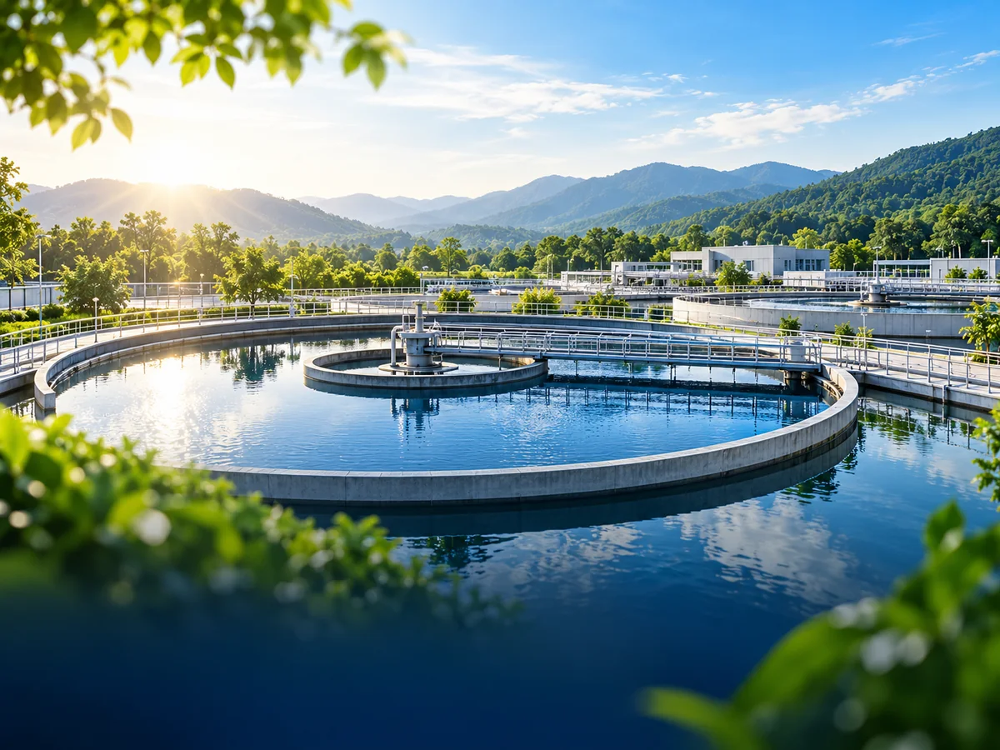
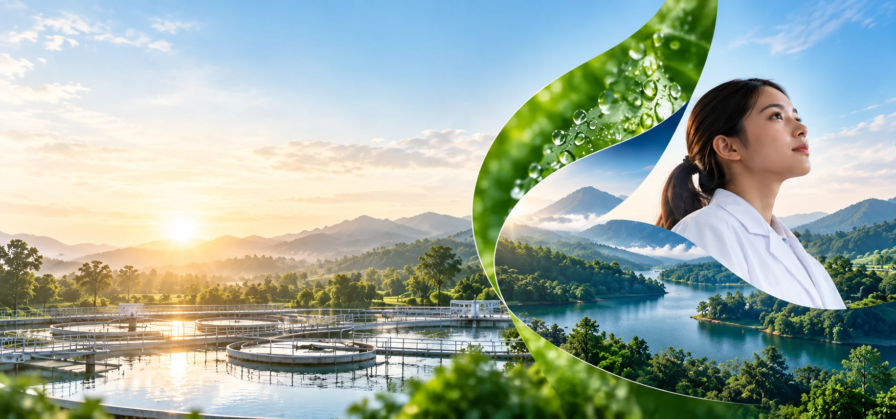
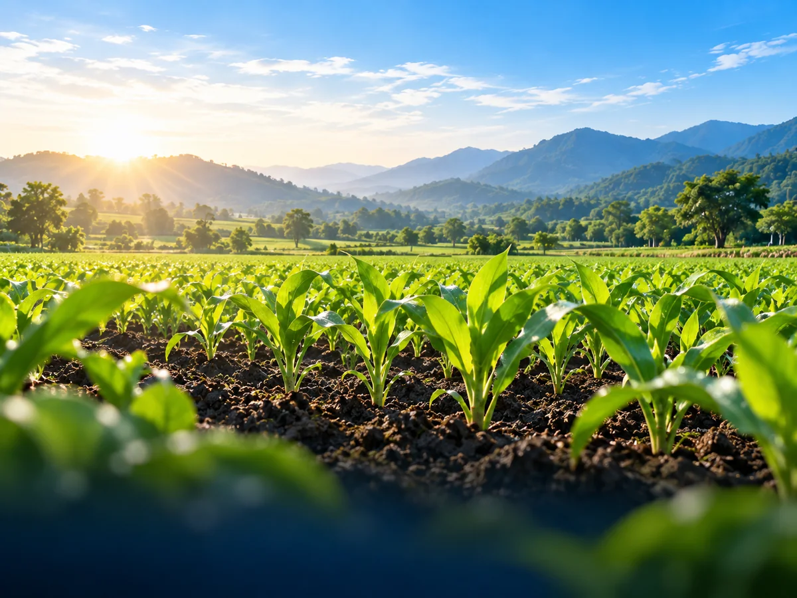
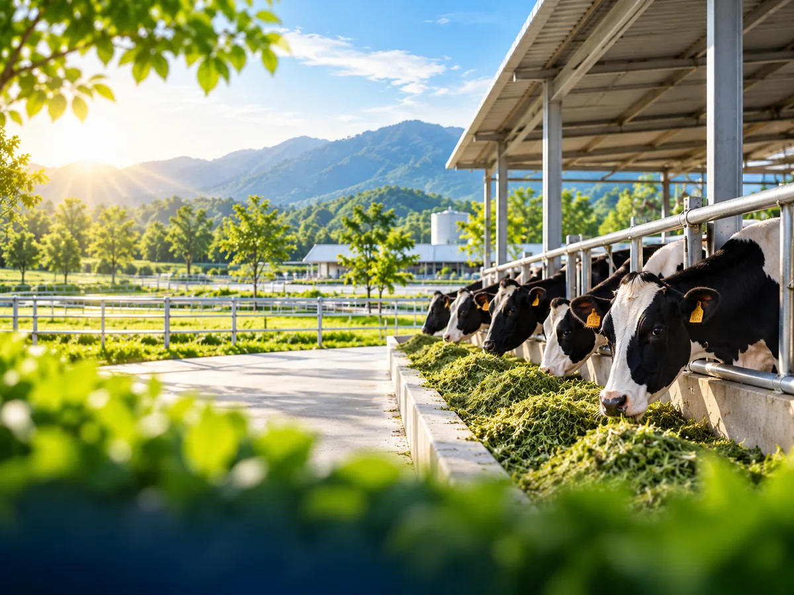
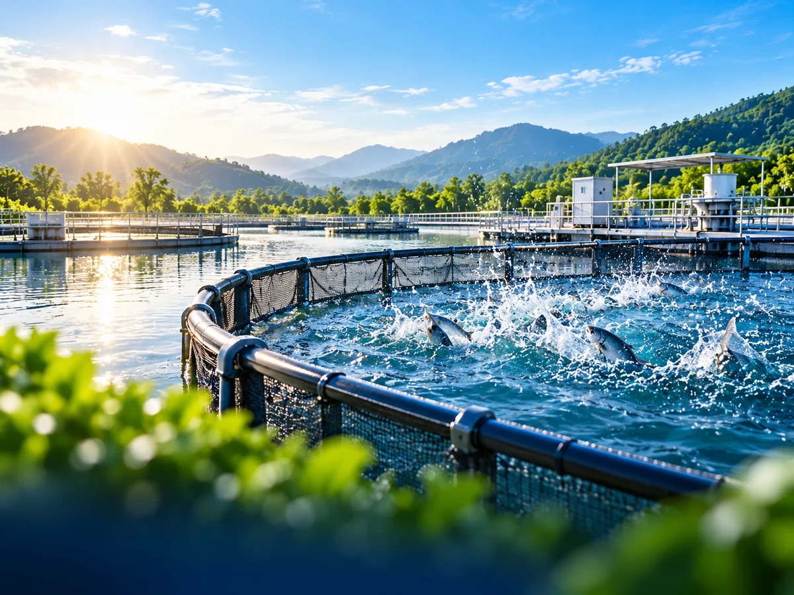
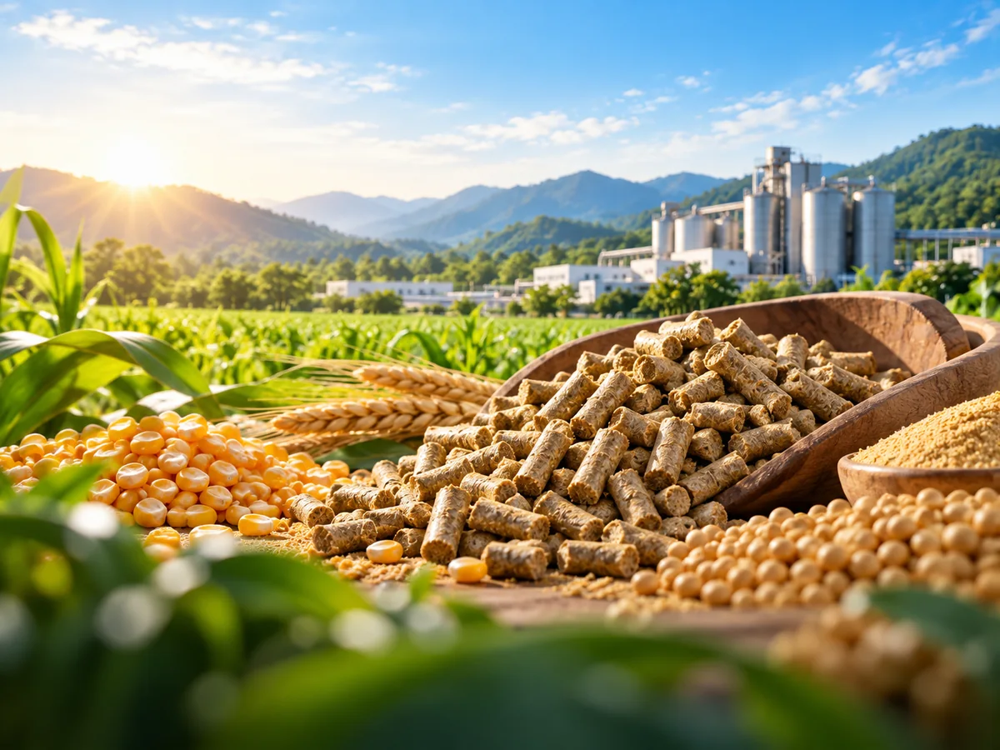

BIOLOGICAL SOLUTIONS · THAI AGROZYME
พลังชีวภาพ
เพื่อสิ่งแวดล้อมที่ดีขึ้น
โซลูชันชีวภาพสำหรับการจัดการของเสีย น้ำ ดิน และระบบการผลิต เพื่อใช้ทรัพยากรได้อย่างมีประสิทธิภาพและสร้างความยั่งยืนในระยะยาว
04 Product Series
06 Solution Areas
18 Products
Biological Solutionsจากปัญหาหน้างาน สู่โซลูชันที่เลือกได้ง่ายขึ้น
01Waste & Water
02Soil & Crops
03Animal Nutrition
THAI AGROZYME
Green Solutions ที่ออกแบบ
ให้เข้ากับโจทย์จริงของแต่ละอุตสาหกรรม
Nature × Biology × Technology
เราใช้ข้อมูลผลิตภัณฑ์ในกลุ่ม Agrozyme Pure, Harvest, Feed และ Test Strip เพื่อจัดวางโซลูชันตามบริบทการใช้งาน ตั้งแต่ระบบน้ำเสีย เกษตร ฟาร์ม ไปจนถึงการเพาะเลี้ยงสัตว์น้ำและอาหารสัตว์
ข้อมูลผลิตภัณฑ์ชุดนี้ระบุว่าพัฒนาสูตรในประเทศสิงคโปร์ และผลิตภายใต้สิทธิการผลิตในประเทศไทย
18ผลิตภัณฑ์
4Product Series
6กลุ่มโซลูชัน
5ขั้นตอนการทำงาน
01โซลูชันของเรา
SOLUTIONS BY INDUSTRY
โซลูชันของเรา
เพื่อทุกอุตสาหกรรม
เลือกจากพื้นที่ใช้งาน เพื่อเข้าถึงกลุ่มผลิตภัณฑ์และแนวทางที่ตรงกับปัญหาได้เร็วขึ้น
ปัดเพื่อดูเพิ่มเติม



START FROM YOUR PROBLEM
คุณกำลังต้องการ
แก้ปัญหาอะไร?
เริ่มจากปัญหาหน้างาน แล้วระบบจะพาไปยังกลุ่มผลิตภัณฑ์ที่เกี่ยวข้องได้เร็วขึ้น
SUSTAINABILITY IN ACTION
เปลี่ยนของเสีย
ให้เป็นโอกาส เพื่อโลกที่ยั่งยืน
แนวคิด Zero Waste มุ่งใช้ทรัพยากรธรรมชาติที่มีจำกัดให้คุ้มค่า ลดของเสีย และแปรสภาพของเสียเมื่อทำได้ — ไม่ใช่เพียงการบำบัดที่ปลายทาง
ดูแนวทางของเรา02ผลิตภัณฑ์ 18 รายการ
PRODUCT PORTFOLIO
ผลิตภัณฑ์ 18 รายการ
ใน 4 Product Series
เลือกซีรีส์เพื่อกรองสินค้า และกดที่การ์ดเพื่อดูรายละเอียดคุณสมบัติตามเอกสารต้นฉบับ
03จากโจทย์หน้างาน
CUSTOMIZED SOLUTIONS
จากโจทย์หน้างาน
สู่การใช้งานในระยะยาว
แนวทางบริการในเอกสารต้นฉบับประกอบด้วยการกำหนดวัตถุประสงค์ ทดลองแนวคิด พิสูจน์คุณค่า ขยายสู่เชิงพาณิชย์ และดูแลต่อเนื่อง
ให้คำปรึกษาเฉพาะราย
กำหนดวัตถุประสงค์และความคาดหวังของโครงการ
พิสูจน์แนวคิด
ทดสอบกระบวนการในระดับห้องปฏิบัติการ
พิสูจน์คุณค่า
ทดลองระดับนำร่องเพื่อประเมินความเป็นไปได้ทางเศรษฐกิจ
ผลิตเชิงพาณิชย์
ขยายขนาดอย่างเป็นสัดส่วน เพื่อเพิ่มประสิทธิภาพและลดต้นทุน
ดูแลระยะยาว
สนับสนุนการใช้งานและพัฒนาความร่วมมืออย่างต่อเนื่อง
LET'S BUILD A BETTER TOMORROW
มีโจทย์เฉพาะ
ในพื้นที่ของคุณ?
เลือกอุตสาหกรรมและผลิตภัณฑ์ที่สนใจ แล้วเตรียมข้อมูลเบื้องต้นเพื่อคุยกับทีม THAI AGROZYME